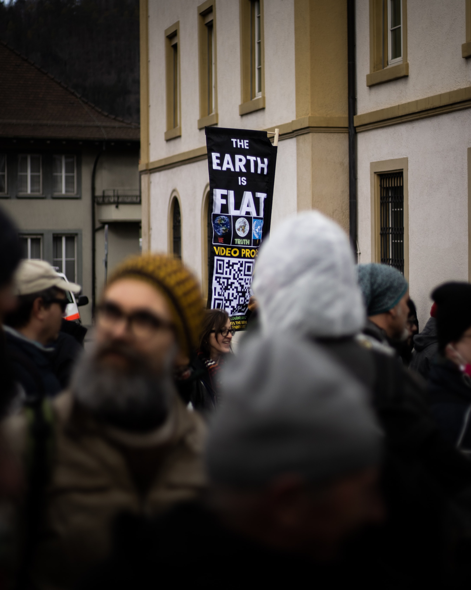

707특임대는 국방부와 국정원 지원 아래 1998년부터 2002년까지 대테러특수임무대대로 전력화를 마쳤다. 직접타격부대의 작전은 타격부대와 지원부대의 연합작전으로 진행된다. 틀은 있었지만 체계화된 반복숙달 훈련은 이루어지지 않았기 때문에 부대를 통합시키게 되었다. 제5공수특전여단과 통합을 통해 정예화를 시작했다. 이름을 특수임무단으로 바꾸어 특수임무단 내부에 707특공대를 두어 특수임무단 요원의 지원을 받으며 직접타격작전을 임무로 수행하는 전술계획을 수립하였다. 기존 707대원들 중 절반의 단기자를 방출시키고 전원 장기자원으로 여단 특임대에서 선발하여 1년간 HALO, SCUBA, 대테러 등의 훈련을 실시하고 2001년 3월 1일 완전한 정예화를 이루어냈다. 하지만 그 시기 특전사령관의 임기가 끝나자 기존 특수부대의 임무를 포함한 여단 규모의 직접타격 작전을 목표로 했던 707특임대는 특임단에서 분리되어 사령부 직속부대로 돌아오게 되었다.
나는 어디서 집중이 가장 잘 되는가? 하고 싶은 것이 있을 때, 그것을 이루려면 어떻게 해야하나??? www.advancedwebranking 통계에 기반한 학습 -> 어떤 단어가 가장 많이 쓰이는가? -> 효율적인 학습. 데이터를 기반으로 한 효율 통계를 기반으로 해서 무엇을 공부할 지 결정해보라.
